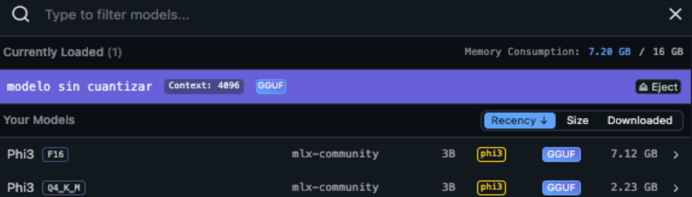
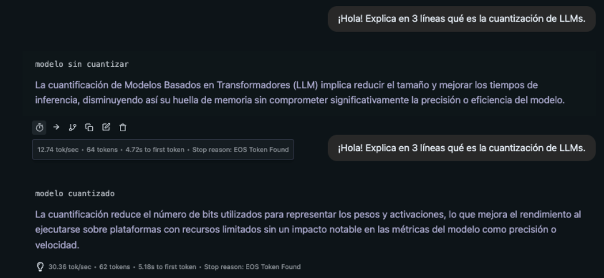

Documento elaborado a partir de una serie de pruebas locales para comparar el modelo original con su versión cuantizada.
objetivo: menos memoria, más velocidad
La tabla resume las métricas medidas con el mismo prompt sobre los dos modelos (sin cuantizar frente a cuantizado Q4_K_M).

Fig. 1 · Vista de LM Studio donde se aprecia la diferencia de tamaño entre ambas versiones.| Métrica | Modelo sin cuantizar | Modelo cuantizado |
|---|---|---|
| Consumo aproximado en memoria | 7.12 GB | 2.23 GB |
| Velocidad de generación | 12.74 tokens/s | 30.36 tokens/s |
| Tiempo hasta el primer token | 4.72 s | 5.18 s |

Fig. 2 · Fragmento de conversación y panel de métricas con el modelo cuantizado cargado.
Estos son los pasos que se siguieron para obtener el archivo phi-3-mini-q4_k_m.gguf
y cargarlo después en LM Studio.
mkdir ~/cuantizacion-phi3 && cd ~/cuantizacion-phi3
brew install git-lfs && git lfs install
git clone https://github.com/ggerganov/llama.cpp.git
python3 -m venv venv && source venv/bin/activate
pip install -r llama.cpp/requirements.txt torch transformers huggingface-hubCon esto queda configurado llama.cpp junto con el entorno virtual de Python y las bibliotecas necesarias.
git clone https://huggingface.co/microsoft/Phi-3-mini-4k-instructSe obtiene la versión oficial de Phi-3-mini-4k-instruct en formato Hugging Face, que servirá como modelo de partida.
python3 llama.cpp/convert_hf_to_gguf.py ./Phi-3-mini-4k-instruct \
--outtype q4_k_m \
--outfile phi-3-mini-q4_k_m.ggufEn este paso el modelo se transforma a un fichero .gguf cuantizado, mucho más ligero y adecuado para ejecución local.
mkdir -p ~/Library/Application\ Support/LMStudio/models/Microsoft/Phi-3-mini-4k-instruct
cp phi-3-mini-q4_k_m.gguf ~/Library/Application\ Support/LMStudio/models/Microsoft/Phi-3-mini-4k-instruct/Al copiarlo a esta ruta, LM Studio lo detecta como un modelo local y permite seleccionarlo desde la interfaz.
# En LM Studio:
# 1. Cargar el modelo Phi‑3 cuantizado
# 2. Lanzar un prompt de test, por ejemplo:
Explica qué es la cuantizaciónCon esta prueba se verificó que la respuesta era coherente y que el consumo de recursos mejoraba respecto al modelo sin cuantizar.